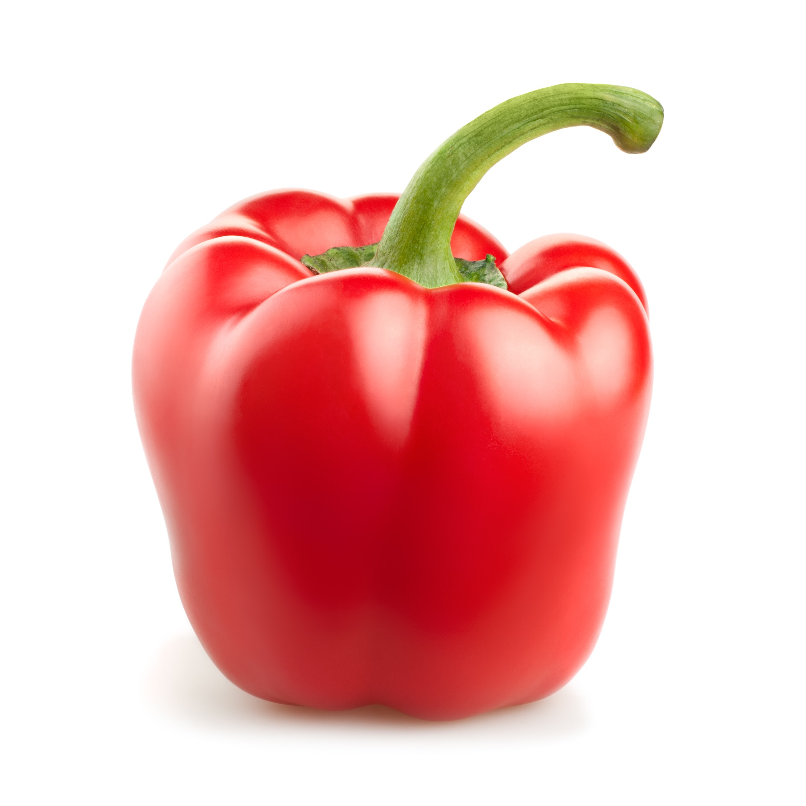

JESTES PAPRYKA
 Papryka to typ kawalarz
Jestes raczej lubiany, bo masz zarty, ktore wiekszosc osob smieszy
Lubisz siê dobrze bawiæ, ale nie przesadzasz i dlatego w³asnie jestes dobrym kompanem imprezowym
Na pewno lubisz siebie i innych ludzi co plus
Ale pewnie niektóre Twoje ¿arty sa na poziomie kabaretów polskich wiec moze troche zluzuj